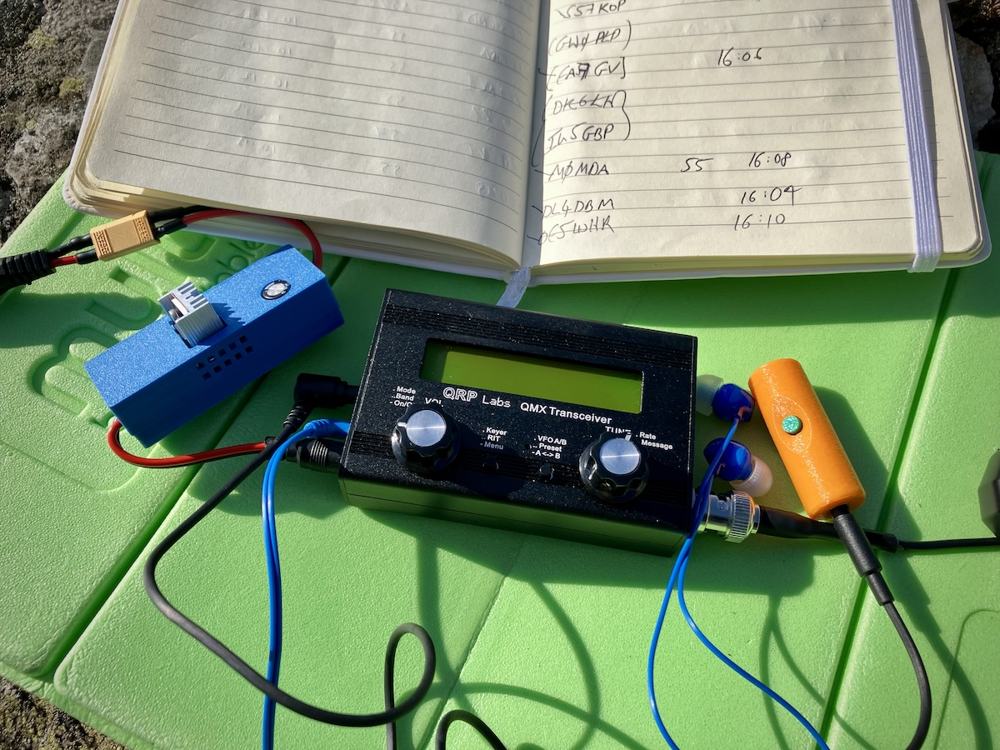
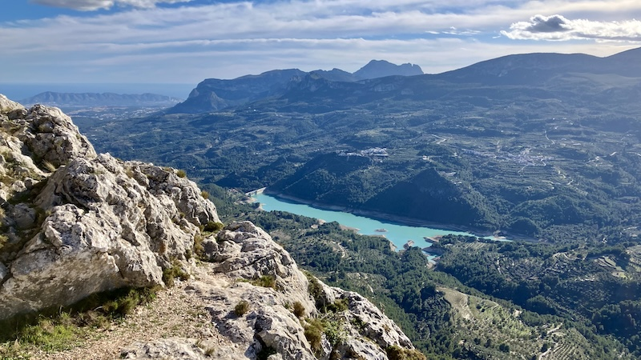
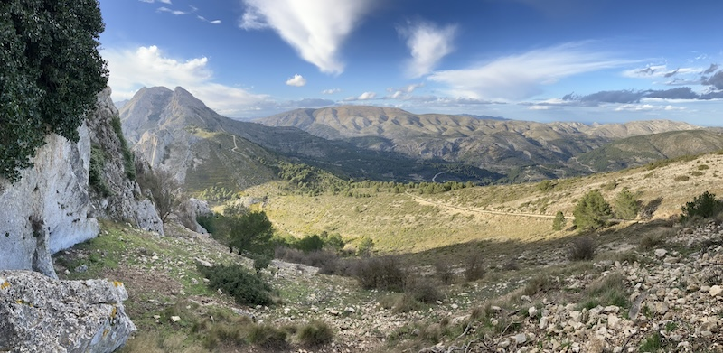
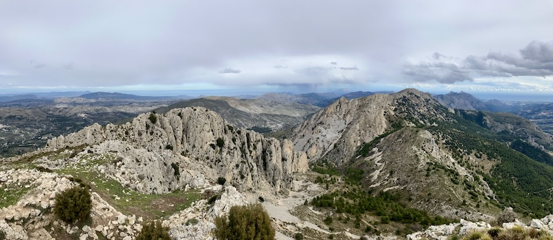
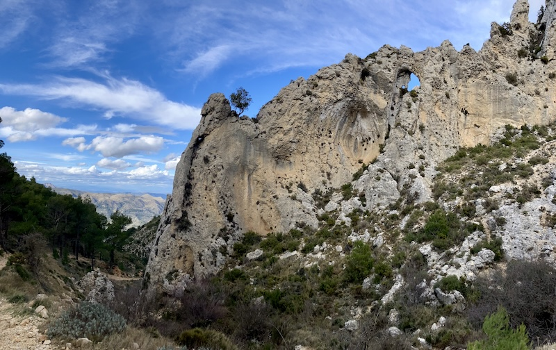

02
How I Obtained the Temporary Permit
For my trip, I chose to work through FediEA (Federación Digital EA), who liaise directly with the Spanish ministry and make the process smooth for a modest membership fee (10 € paid online, for standard annual membership). You
can
apply independently, but having a local representative greatly simplifies things. Plan several weeks ahead to prevent disappointment.
To apply, I provided:
- A completed application form
- A copy of my Ofcom licence
- A passport scan
- The address where I would be staying
- The dates of my visit
The official permit — with the callsign EA*/M9OMS — arrived soon after. I was thrilled.
The document specifies prefixes (1–9), allowed bands, frequency allocations, and power limits. Importantly,
you must still obey the restrictions of your UK licence while abroad.
Spanish allowances (such as 60 m at 1 kW) do not override your home licence conditions.
I let Mikel know the application had succeeded, and he immediately offered both advice and a joint summit activation during my stay. His local knowledge proved invaluable.
03
Cracking the Portable Power Puzzle
With licensing sorted, the next challenge was ensuring my portable station was flight-friendly.
I left my 3S LiPo at home and instead planned to buy a battery in Spain, pairing it with my linear VLDO regulator
[5]
set at 11.9 V, to keep my radio happy regardless of battery chemistry.
Before committing, I experimented with a USB-C Power Delivery (PD) power bank plus a 12 V PD trigger cable (I would be carrying a power bank anyway).
For the uninitiated, USB-C PD is very useful. Devices can now negotiate voltages with compatible PD sources, unlike the old USB standard which only supplied 5V. Furthermore, it can deliver higher currents (fast-charging laptops, for example).
In my case, I purchased a trigger cable that was designed to negotiate 12 V.
Unfortunately, my PD bank appeared to be built for charging, not the rapidly changing current demands of an SSB signal.
Testing it with my friend M7GFJ, we observed the following:
- Distorted audio feedback in my headphones
- Fluctuating voltage readings
We concluded the switching topology of this power bank caused ripple noise, which compromised the radio's field reliability.
Running the power bank through my VLDO cleaned things up considerably (it has some inherent ripple rejection). It worked — but I wouldn't recommend the setup.
Use a clean power source.
Some hams report better results with PD, but if you want to try this route, use known-good hardware tested by trusted amateurs. As for me, next time I'll stick with a
"dumb"
battery.
"Outdoor activity has always been my primary motivation, and amateur radio adds an entirely new way to experience a landscape."
04
Lightweight Travel Kit
Once power was sorted, the rest came together easily. I kept the kit deliberately simple:
- QMX 60–15 m (miniature, high performing 5 W, 6 band, all-modes HF transceiver, 12.0 V)
- G7UFO Turret Mini Mic (miniature and ergonomic)
- Headphones
- Common mode choke
- Coax
- Radio Stuff 40–10 m End Fed Half Wave antenna (portable)
- Caperlan Lakeside telescopic rod (to use as a mast, with pegs and guys)
No backup rig. No VHF/UHF radio. Minimal baggage.
The plan was to operate
exclusively on 20 m SSB
— ideal for European coverage while avoiding local-language voice traffic on 40 m and VHF.

An extremely light and compact station. To improve protection from gusts (and stability on slopes), I intend to use something other than a sit-mat on my next trip.
05
Activation Highlights
Outdoor activity has always been my primary motivation, and amateur radio adds an entirely new way to experience a landscape. Instead of being overwhelmed by the sheer number of peaks, the prospect of activating them helped me narrow my choices and view the terrain differently.
EA5/AT-057
Penya Foradada
A rarely visited summit — I became only the third operator ever to activate it. The ascent is spicy, but the reward is a spectacular view across La Serella, along with ruins atop the peak and intriguing local history.
Without SOTA, I might never have chosen this one.
Penya Foradada: the meaning of this Catalan/Valencian name is "perforated rock". La Serella: literally means "the little mountain range" (with "serra" meaning "mountain range").

Beautiful South-Easterly view towards the Guadalest reservoir, atop Penya Foradada (EA5/AT-057).

Westerly view, descending from Penya Foradada (EA5/AT-057). La Serella on the left, and a cluster of summits including Alto de Tronca on the right.
EA5/AT-004
Pla de la Casa
Here I logged 28 QSOs. Though it's roughly 200 m lower than the highest points on the Aitana ridge, it delivered the best view of the entire trip: a 360-degree panorama that feels like standing above the world.
The summit is beautiful, spacious, and well worth the effort.

Beautiful panoramic views atop Pla de la Casa (EA5/AT-004).

Very interesting features, descending on the West side of Pla de la Casa (EA5/AT-004).